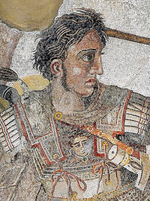

About Historyfriend.com
History Project Templates PDF
Alexander the Great: A Hero of Ancient History
Alexander the Great was a famous king and military leader who lived a very long time ago, around 356 BC to 323 BC. He was born in a place called Macedonia, which is in the northern part of Greece. Alexander became a powerful ruler when he was only 20 years old, after his father, King Philip II, was assassinated.
One of the most incredible things about Alexander was that he conquered a huge empire when he was still very young. He led his army to victory in many battles, and his empire stretched from Greece to Egypt and all the way to India. His favorite horse was named Bucephalus, and they went on many adventures together.
Alexander was not only a great warrior but also a smart and curious person. He loved learning from different cultures and even studied under the famous philosopher Aristotle when he was a boy.
Despite all his achievements, Alexander the Great died when he was only 32 years old. His legacy lived on, and people remembered him as one of the greatest military leaders in history. Many cities were named after him, and his conquests had a big impact on the world.

Alexander the Great: A Short Biography
Once upon a time in Ancient Greece, there lived a remarkable young boy named Alexander. Born in 356 BCE in the city of Pella, he would grow up to become one of the greatest leaders in history – Alexander the Great.
Alexander was no ordinary child. From a very young age, he showed incredible intelligence and a love for learning. His teacher was none other than the famous philosopher Aristotle, who filled his curious mind with knowledge about the world.
As he grew older, Alexander became fascinated with the idea of adventure and conquest. His father, King Philip II of Macedonia, recognized his son's potential and provided him with the best education and training in the art of war.
When Alexander was just 20 years old, he inherited the throne after his father's death. Determined to fulfill his dream of conquering the world, he set out on an extraordinary journey with a powerful army.
One by one, Alexander conquered vast lands and defeated mighty empires. His most famous achievement was the conquest of Persia, a massive empire that stretched from Asia to Africa. He earned the nickname "Alexander the Great" for his remarkable victories.
But Alexander wasn't just a fierce warrior; he was also a wise leader. Instead of forcing his beliefs on the people he conquered, he embraced their cultures and encouraged them to live in harmony. This approach made him beloved by many, and his empire became a melting pot of different traditions and ideas.
Despite his numerous victories, Alexander's journey was not without challenges. His troops faced tough battles, and the long marches took a toll on their strength. Eventually, Alexander decided to return home, but sadly, he fell ill and passed away at the age of 32.
Although his life was short, Alexander's legacy lived on. His conquests left a lasting impact on the world, and the cultures he encountered were forever changed by the blending of ideas and traditions. Even today, people study Alexander the Great's remarkable achievements and the lessons of leadership he left behind.
Fun Facts
Born to Be Great: Alexander the Great was born in 356 BC in Pella, the ancient capital of Macedonia, which is now part of modern day Greece.
Tutored by Aristotle: He was lucky to have one of the greatest philosophers of all time, Aristotle, as his teacher. He learned about science, philosophy, and literature from him.
Fearless Warrior: Alexander was known for his bravery in battle. He led his army to victory in many battles, and he was even wounded several times.
Big Empire Dreams: Alexander's dream was to conquer the world, and he came pretty close! His empire stretched from Greece to Egypt, all the way to India.
Conqueror of the Known World: By the time he was 30, Alexander had built one of the largest empires in history, stretching from Greece to Egypt, India, and even parts of Asia.
Timeline
356 BC: Alexander's birth in Pella, Greece.
336 BC: Alexander becomes King of Macedonia after his father's assassination.
334 BC - 323 BC: He embarks on a series of conquests, defeating the Persian Empire and reaching as far as India.
323 BC: Alexander dies in Babylon at the age of 32.
Alexander's Impact on the World
Spread of Greek Culture: Alexander's conquests helped spread Greek culture, including language, art, and philosophy, throughout his empire. This is called the Hellenistic Era.
Great Cities: He founded many cities, often named Alexandria, which became centers of learning, trade, and culture.
Map Changer: Alexander's empire changed the world map and influenced later empires like the Roman and Byzantine Empires.